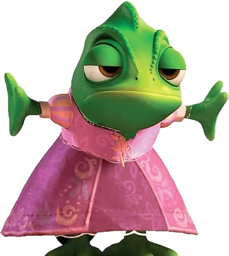
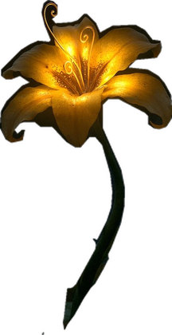

| Video original | 10.655 KB |
| Video ya listo | 760 KB |
| Primer cuadro (poster) | 64 KB |
| Pascal + la flor | 307 KB |
| Linternas y brillos | 0 KB |
Las linternas y los brillos no son un video ni un GIF: son formas dibujadas por el navegador. Se puede cambiar cuántas hay y a qué velocidad suben sin que pese un kilobyte más.